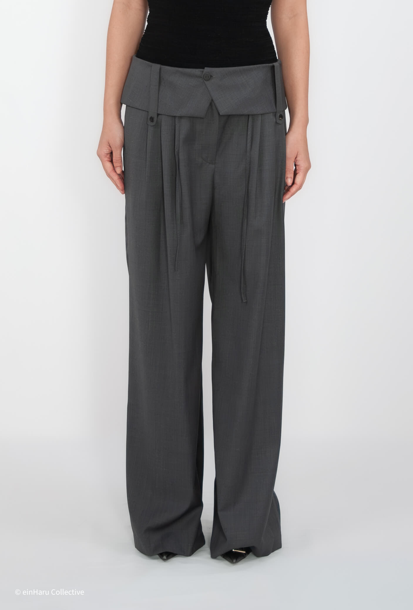
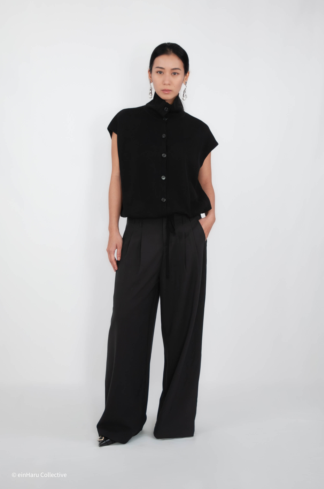
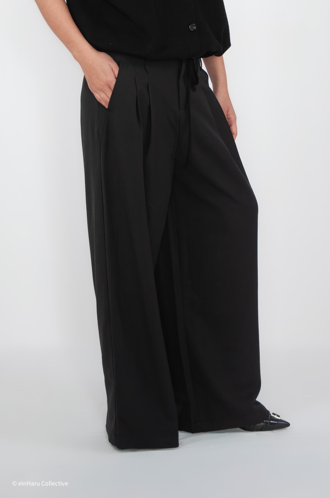

How to Style Wide Leg Trousers in 2026
Wide leg trousers remain one of the most practical silhouettes in a minimalist wardrobe — but proportion decisions make the difference between a look that feels considered and one that reads as unresolved. This guide covers the core rules for making wide leg trousers work as repeatable daily wear.
Wide leg trousers styled for Berlin daily wear: volume, structure, and proportion rules from einHaru Collective.

Proportion: Balance Volume with a Clean Top Line

The key rule with wide leg trousers: if the leg is wide, the top line needs to be controlled. An oversized shirt worn untucked over a barrel-cut trouser creates competing volumes. Instead, tuck in, half-tuck, or choose a cropped top that ends at the natural waist to define the transition point.
For trousers with volume through the hip and thigh — like the Beaker Pants — a fitted or slightly structured top gives the silhouette a clear hierarchy. The trouser does the visual work; the top holds the eye upward.
Footwear: Let the Hem Dictate the Shoe

A wide leg trouser with a long hem works best with a shoe that adds visual grounding. Chunky-sole shoes, low block heels, and simple loafers all work. Delicate shoes can disappear under the volume and make the foot look unsupported.
For cropped wide leg cuts, flat shoes and sneakers are fine — the hem sits high enough to read clearly. With a full-length cut, something with a slight lift or substantial sole holds the proportion at the ankle.
Top Line: Fitted, Structured, or Cropped
Three top-line approaches that consistently work with wide leg trousers:
Fitted top, untucked — works when the top ends near the hip. The body stays visible enough to read as intentional, not shapeless.
Structured shirt, tucked or half-tucked — adds a waist reference point. A good collar or defined shoulder keeps the top half from collapsing into the volume below.
Cropped length — ends at the natural waist or just above. Clear visual separation between top and bottom makes wide leg proportions feel deliberate, not accidental.
The Pin Tuck Wide Leg Trouser from HELDER pairs well with a clean shirt worn with a single button open at the waist, creating a low-key tuck without committing to a fully tucked look.
Layering Over Wide Leg Trousers
When adding an outer layer, length is the main decision. A coat or jacket that ends mid-thigh preserves the shape of the trouser below. A floor-length coat over wide leg trousers creates a full column effect — which works, but the trouser contributes nothing to the silhouette.
For Berlin weather transitions, a cropped or hip-length outer layer over wide leg trousers is the most practical balance. You keep the trouser silhouette visible and the overall volume stays manageable for commuting or outdoor movement.
One layer is usually enough. Wide leg trousers carry visual weight on their own. Adding multiple layers of similar volume tends to read as overcomplicated rather than considered.
Shop: Wide Leg Trousers from einHaru Collective
Two wide leg trouser options currently available from the einHaru edit — both in Berlin, shipping EU-wide.
Beaker Pants — Londonflat
A barrel-shaped wide leg trouser in a clean, structured fabric. The volume sits through the thigh and tapers slightly at the hem, creating a grounded silhouette rather than a swept-out one. Works with fitted tops and a single outer layer. Available in the current edit at einHaru Collective.
View product

Pin Tuck Wide Leg Trouser — HELDER
A refined wide leg with pin tuck detailing along the front leg. The tuck adds structure without stiffness and keeps the silhouette clean across the knee. The high waist creates a natural reference point without needing a belt. Fits true to size — see the product page for garment measurements.
View productContinue reading: Seoul–Berlin Minimalist Style Guide or return to the Editorial hub.